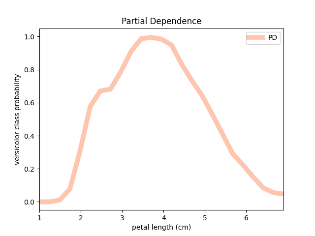

Note
Click here to download the full example code or run this example in your browser via Binder
Using Individual Conditional Expectation Explainer¶
This example illustrates how to use the Individual Conditional Expectation
explainer and its plotting function. It also shows how an ICE array can be used
to compute Partial Dependence – see the fatf.transparency.models.feature_influence.partial_dependence_ice function or the
Using Partial Dependence Explainer
example.
# Author: Kacper Sokol <k.sokol@bristol.ac.uk>
# License: new BSD
import fatf.utils.data.datasets as fatf_datasets
import fatf.utils.models as fatf_models
import fatf.transparency.models.feature_influence as fatf_fi
import fatf.vis.feature_influence as fatf_vis_fi
print(__doc__)
# Load data
iris_data_dict = fatf_datasets.load_iris()
iris_X = iris_data_dict['data']
iris_y = iris_data_dict['target'].astype(int)
iris_feature_names = iris_data_dict['feature_names']
iris_class_names = iris_data_dict['target_names']
# Train a model
clf = fatf_models.KNN()
clf.fit(iris_X, iris_y)
# Select a feature to be explained
selected_feature_index = 2
selected_feature_name = iris_feature_names[selected_feature_index]
print('Explaining feature (index: {}): {}.'.format(selected_feature_index,
selected_feature_name))
# Define the number of samples to be generated (granularity of the explanation)
linspace_samples = 25
# Create an ICE explanation
ice_array, ice_linspace = fatf_fi.individual_conditional_expectation(
iris_X, clf, selected_feature_index, steps_number=linspace_samples)
# Select class for which the explanation will be produced
explanation_class = 1
explanation_class_name = iris_class_names[explanation_class]
print('Explaining class (index: {}): {}.'.format(explanation_class,
explanation_class_name))
# Plot the explanation for the whole dataset for class 0
ice_plot = fatf_vis_fi.plot_individual_conditional_expectation(
ice_array,
ice_linspace,
explanation_class,
class_name=explanation_class_name,
feature_name=selected_feature_name)
Out:
Explaining feature (index: 2): petal length (cm).
Explaining class (index: 1): versicolor.
If you want to visualise ICE of a single data point, this can be extracted from the ICE array and plotted with the same function.
# Select a data point to be explained
index_to_explain = 42
dp_to_explain = iris_X[index_to_explain, :]
dp_to_explain_class_index = int(iris_y[index_to_explain])
dp_to_explain_class = iris_class_names[dp_to_explain_class_index]
feature_description_template = ' * {} (feature index {}): {:.1f}'
data_point_description = []
for i, name in enumerate(iris_feature_names):
dsc = feature_description_template.format(name, i, dp_to_explain[i])
data_point_description.append(dsc)
data_point_description = ',\n'.join(data_point_description)
print('\nExplaining data point (index {}) of class {} (class index {}) with '
'features:\n{}.'.format(index_to_explain, dp_to_explain_class,
dp_to_explain_class_index,
data_point_description))
# Extract the ICE explanation from the complete ICE array
ice_array_dp = ice_array[[index_to_explain], :, :]
# Visualise the explanation of a single data point
ice_dp_plot = fatf_vis_fi.plot_individual_conditional_expectation(
ice_array_dp,
ice_linspace,
dp_to_explain_class_index,
class_name=dp_to_explain_class,
feature_name=selected_feature_name)
Out:
Explaining data point (index 42) of class setosa (class index 0) with features:
* sepal length (cm) (feature index 0): 4.4,
* sepal width (cm) (feature index 1): 3.2,
* petal length (cm) (feature index 2): 1.3,
* petal width (cm) (feature index 3): 0.2.
ICE calculation is a base of Partial Dependence (fatf.transparency.models.feature_influence.partial_dependence_ice). Then, Partial Dependence
can be plotted either as an overlay on top of the ICE plot or on its own.
# Calculate Partial Dependence
pd_array = fatf_fi.partial_dependence_ice(ice_array)
# Plot Partial Dependence on its own
pd_plot_clean = fatf_vis_fi.plot_partial_dependence(
pd_array,
ice_linspace,
explanation_class,
class_name=explanation_class_name,
feature_name=selected_feature_name)
# Create a fresh ICE plot and add the Partial Dependence plot on top of it
ice_plot_2 = fatf_vis_fi.plot_individual_conditional_expectation(
ice_array,
ice_linspace,
explanation_class,
class_name=explanation_class_name,
feature_name=selected_feature_name)
ice_plot_2_figure, ice_plot_2_axis = ice_plot_2
pd_plot_overlay = fatf_vis_fi.plot_partial_dependence(
pd_array,
ice_linspace,
explanation_class,
class_name=explanation_class_name,
feature_name=selected_feature_name,
plot_axis=ice_plot_2_axis)
- 

Total running time of the script: ( 0 minutes 14.643 seconds)